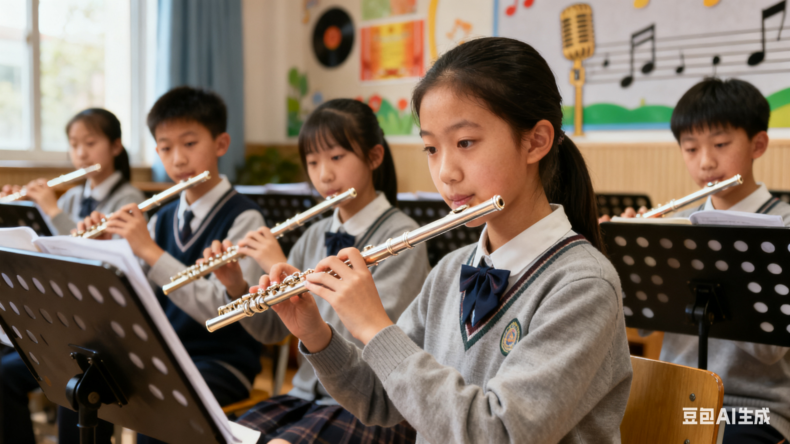

社团简介 | 活动安排 | 风采展示 | 社员故事 | 在线报名
长笛之声社团：以音为舟，载梦远航 （全文约1250字） 【序章：笛声里的初遇】 在校园艺术楼三层的转角，总有一间教室的窗棂会透出暖黄的灯光。晚风拂过，便有清泉般的笛声潺潺流出——有时是《卡农》的悠扬循环，有时是《天空之城》的空灵遐想，偶尔还会混入《孤勇者》的活泼变奏。这里是长笛之声社团的“秘密基地”，一群因热爱而相聚的年轻人，用长笛的金属笛管与自己的呼吸对话，在音符的跌宕中书写青春的故事。 自2015年成立以来，这个以长笛为核心的社团已从7人的“兴趣小组”成长为拥有80余名社员、覆盖全校各年级的“艺术大家庭”。我们相信，长笛不仅是乐器，更是连接心灵的桥梁——它能让内向的孩子找到表达自我的方式，能让忙碌的学子在旋律中寻得片刻宁静，也能让一群陌生人因共同的音乐追求而成为挚友。 【日常篇：在训练中成长，在笑声中蜕变】 每周三、五的下午4点，艺术楼302教室便成了“音乐的实验室”。社员们根据演奏水平分为三个班级，在导师的带领下开启一场场“声音的冒险”。 初级班：从“吹响”到“吹美” 对于零基础的社员来说，第一次吹响长笛的瞬间往往充满惊喜与挫败。有人因用力过猛吹得满脸通红，有人因气息不稳让笛声“跑调”，但导师们总能用一句玩笑化解紧张：“别急，咱们这是在和笛子‘谈恋爱’，得慢慢来。” 为了降低学习门槛，导师们设计了“呼吸训练游戏”——将纸巾贴在墙上，用平稳的气息让它保持悬浮；“指法闯关挑战”——通过记忆卡片快速按下对应按键，像玩拼图一样熟悉笛身。2023年新增的“长笛盲盒”环节更是社员们的最爱：随机抽取一首陌生曲目，10分钟内即兴改编并演奏。有人将《小星星》改编成爵士风，有人用长笛模仿鸟鸣，教室里总是笑声与掌声交织。 中级班：与经典对话 当社员们能流畅演奏简单曲目后，便进入了“与音乐对话”的阶段。导师会带着大家解析巴赫《无伴奏长笛组曲》的复调结构，或探讨莫扎特《D大调协奏曲》中的情感层次。一次训练中，社员王雨桐因总吹错一个音符而沮丧，导师没有直接纠正，而是讲起莫扎特创作时的故事：“他14岁就能写出这样的曲子，但背后是无数次的推翻重来。音乐从不是完美的表演，而是真诚的表达。”这句话让王雨桐豁然开朗，后来她在校园音乐会上完美演绎了这首曲子，台下掌声经久不息。 高级班：突破边界的创造 对于备考专业院校或热爱创新的社员，高级班是“音乐实验场”。他们尝试将长笛与电子音乐、爵士即兴融合，甚至用长笛模仿人声演唱《青花瓷》。2022年，社员陈默与计算机学院的同学合作，开发了一款“AI长笛伴奏系统”，能根据社员的演奏实时生成和声，让独奏变成“虚拟合奏”。这项创新让社团在全国大学生艺术科技展中斩获银奖。 【舞台篇：从校园到星辰大海】 如果说日常训练是“播种”，那么舞台便是“收获的季节”。长笛之声社团的每一场演出，都是社员们用汗水与热爱浇灌出的花朵。 “四季音乐会”：用旋律诠释时光 每年春、秋两季，社团都会举办“四季音乐会”。2023年“春之章”中，社员们身着淡绿色纱裙，在樱花树下吹奏《春之颂》，笛声与花瓣一同飘落，观众席中的一位老师感叹：“这像是把莫奈的画变成了声音。”而“秋之章”则融入了灯光与舞蹈——社员们在干冰营造的雾霭中演奏《秋日私语》，舞者用红绸模拟枫叶飘落，有观众拍照发朋友圈：“原来古典音乐可以这么‘潮’！” 公益演出：让音乐温暖世界 社团的公益足迹遍布养老院、特殊儿童学校与社区。2024年春节前夕，社员们走进市福利院，为孤寡老人吹奏《茉莉花》。当笛声响起时，一位坐在轮椅上的奶奶突然跟着哼唱起来，眼角泛着泪光。她拉着社员李晓萌的手说：“我年轻时也爱唱歌，谢谢你们让我又想起了那些日子。”这样的瞬间，让社员们深刻体会到：音乐不仅是表演，更是治愈与连接的力量。 【温暖篇：比技巧更珍贵的，是彼此的陪伴】 在长笛之声社团，“成长”从不是孤军奋战。零基础的社员张萌曾因吹不响笛头而偷偷哭泣，是学姐林悦陪她加练到晚上9点，还送她一个刻着“坚持”字样的笛托；备考中央音乐学院的周浩，总在深夜收到导师发来的练习建议，甚至附上自己年轻时的演奏视频作为参考；而社长陈子轩会记住每个社员的生日，在训练结束后突然端出蛋糕，让整个教室充满惊喜的欢呼。 这里没有“高手”与“新手”的隔阂，只有“我们一起进步”的默契。社员们会为了一场演出反复排练到熄灯，也会在训练间隙分享零食、聊梦想；他们会为同伴的进步鼓掌，也会在有人气馁时说：“别怕，我陪你再练一遍。” 【尾声：加入我们，让长笛成为青春的注脚】 如果你也渴望用音乐表达自我，如果你也相信旋律能治愈人心，长笛之声社团永远为你敞开大门。无需担心零基础，这里有最耐心的导师；无需害怕孤独，这里有最温暖的伙伴。 在这里，你可以是舞台上闪闪发光的独奏者，也可以是公益活动中传递温暖的使者；你可以钻研高深的演奏技巧，也可以单纯享受吹笛的快乐。因为在这里，音乐没有标准答案，只有无限可能。 长笛之声，不止于笛声。 它是一群年轻人对美的追求，对善的坚持，对生活的热爱。它让我们相信，当指尖触碰笛管的那一刻，我们触碰的不仅是音乐，更是更好的自己。 加入方式：扫描下方二维码报名，或每周三下午4点直接来艺术楼302教室。让我们以音为舟，载梦远航！
无论你是零基础的新手，还是已经能熟练演奏的老玩家， 只要对长笛和古典音乐有兴趣，都欢迎加入长笛社。 社团会安排老成员一对一帮带，帮助大家从气息、指法到舞台表现逐步提高。
社团平时的活动地点主要在学生活动中心的音乐教室， 每周会安排固定的练习时间，也会根据需要加练， 为各种校园演出和比赛做好准备。
为了让大家更好地了解长笛社的日常，本学期计划安排如下几项主要活动。 具体时间可能会根据学校统一安排略作调整，详情请关注社团通知。
| 长笛社 2025 年春季学期活动安排表 | |||
|---|---|---|---|
| 活动名称 | 活动时间 | 活动地点 | 负责人 |
| 新成员见面会 | 3 月第 2 周 周五晚 | 学生活动中心 音乐教室 201 | 张强 |
| 长笛基础教学公开课 | 3 月第 3 周 周六下午 | 李娜 | |
| 校园古典乐独奏会 | 4 月第 2 周 周日 | 图书馆报告厅 | 王浩 |
| 期末专场音乐会 | 6 月第 1 周 周六晚 | 大学生活动中心 大礼堂 | 刘芳 |
上表仅列出了部分代表性活动，日常还会有小型即兴合奏、乐理知识分享等活动， 欢迎有想法、有创意的同学参与策划。
下面是一张往届校园音乐会的照片示意。点击图片，可以查看更详细的活动介绍页面。 在实际使用中，请根据自己的图片文件名进行修改。
图中为上学期“秋日乐章”校园音乐会上，长笛社成员的集体演出场景。 平时的训练与排练，都会在正式演出中得到充分的展示机会。
下面示例演示如何在页面中嵌入一段长笛社宣传视频。 如果暂时没有真实的视频文件，可以先保留代码结构，待以后再替换为真实文件路径。
【从零基础到舞台：一个普通女孩的长笛成长记】 （全文约1500字） 第一章：初遇长笛——一场意外的“声音邂逅” 2023年9月，大一新生林小夏拖着行李箱走进校园时，从未想过自己会与长笛结缘。作为中文系的学生，她的生活本该是诗词歌赋与图书馆的静谧，但开学第一周，一张贴在食堂门口的海报改变了她的轨迹——“长笛之声社团招新：零基础可报名，免费体验课！” “长笛？那不是电视剧里贵族小姐吹的乐器吗？”小夏盯着海报上优雅的演奏者照片，心里泛起一丝好奇。她从小五音不全，连唱歌都跑调，更别说乐器了。但海报上那句“音乐没有门槛，只有热爱”像块磁石，吸引着她报了名。 第一次体验课那天，小夏紧张得手心冒汗。教室里坐着十几个和她一样的新生，有人摆弄着崭新的长笛，有人对着乐谱皱眉。导师是一位扎着马尾的学姐，她笑着举起一支长笛：“别怕，它不会咬人。来，先试试吹响它。” 小夏接过笛子，学着学姐的样子把笛头含在嘴里，深吸一口气——结果只发出一声微弱的“噗”。周围传来几声轻笑，她的脸瞬间涨得通红。“别急，呼吸要像闻花香一样轻柔。”学姐走到她身边，轻轻托住她的手，“再试一次。” 第三次、第四次……直到第十次，笛管里终于传出一声清脆的“do”。小夏的眼睛亮了，她兴奋地抬头，看见学姐正对她竖起大拇指。那一刻，她突然觉得，这根冰冷的金属管子，似乎有了温度。 第二章：笨鸟先飞——在挫折中寻找节奏 体验课后，小夏正式加入了长笛之声社团。每周三、五下午的社团训练成了她最期待的事，但现实很快给她泼了冷水。 第一节正式课，导师教大家吹《小星星》。当其他社员已经能连贯吹出整首曲子时，小夏还在为“sol”和“la”的指法纠结。她的手指总是不听话，要么按错键，要么漏按，笛声像卡壳的录音机，断断续续。更糟糕的是，她总控制不好气息，吹到一半就头晕眼花，有一次甚至差点把笛子摔在地上。 “我是不是根本不适合学长笛？”那天训练结束后，小夏躲在洗手间偷偷抹眼泪。她想起自己从小到大从未成功学过任何才艺：小学学钢琴，半年就放弃；初中练书法，写出的字像蚯蚓爬；高中参加合唱团，因为跑调被老师劝退……“难道这次也要重蹈覆辙吗？” “小夏！”门外传来熟悉的声音，是社团的学姐林悦。她轻轻推开门，递给小夏一杯热奶茶：“我刚开始学的时候，比你还笨呢。有一次吹《欢乐颂》，把‘欢乐女神’吹成了‘欢乐鬼神’，把导师都逗笑了。” 小夏破涕为笑。“可我怎么总进步不了？”她小声问。 “因为你在和‘完美’较劲啊。”林悦拍拍她的肩，“我导师说过，学乐器就像种花，有人种玫瑰，有人种向日葵，但不管种什么，都得先让根扎稳。你现在需要的，是多一点耐心。” 那天晚上，小夏在宿舍里对着镜子练习。她把指法图贴在墙上，用手机录下自己的笛声，一遍遍和标准演奏对比。室友们抱怨她“太拼”，她却咬着牙坚持：“我不能再半途而废了。” 第三章：破茧成蝶——从“吹响”到“吹美” 三个月后，小夏的进步让所有人惊讶。她不仅能流畅吹奏《小星星》，还挑战了更难度的《卡农》。更让她开心的是，她终于掌握了“气息控制”——现在她能连续吹奏两分钟而不头晕，笛声也变得圆润饱满。 2024年春天，社团筹备“四季音乐会”，导师宣布要选几名社员登台表演。小夏心里既期待又紧张：“我能行吗？” “当然行！”林悦把她拉到一边，“这次音乐会的主题是‘春之韵’，我想让你吹《春之颂》。这首曲子需要细腻的情感表达，你最近练得那么认真，一定能行。” 接下来的两周，小夏进入了“魔鬼训练”模式。她每天早起半小时在操场练习呼吸，午休时躲在艺术楼的楼梯间吹笛，晚上熄灯后还戴着耳机听原版演奏。有一次，她因为太专注，差点撞上教室的门框，惹得路过的同学笑她“走火入魔”。 音乐会当天，小夏穿着淡绿色的连衣裙，手心却全是汗。她站在后台，听着台下的窃窃私语，心跳快得像要蹦出来。 “接下来，请欣赏长笛独奏《春之颂》，演奏者：林小夏。” 聚光灯打在身上的那一刻，小夏突然平静了。她举起长笛，深吸一口气——笛声响起，像春风拂过湖面，像嫩芽顶开泥土，像第一滴春雨落在花瓣上。她闭上眼，仿佛看见自己站在一片开满野花的草地上，笛声是风，是光，是生命在生长。 一曲终了，台下爆发出热烈的掌声。小夏睁开眼，看见导师在抹眼泪，林悦对她竖起双大拇指，而观众席中，几个同学正举着手机录像，脸上带着惊喜的笑容。 第四章：新的起点——舞台之外，还有更广阔的世界 音乐会结束后，小夏成了社团的“小明星”。有学弟学妹找她请教指法，有老师夸她“有音乐天赋”，甚至还有校外机构邀请她去表演。但她最珍惜的，是那天演出结束后，导师对她说的话：“小夏，你记住，今天站在舞台上的不是你一个人，而是所有曾经跌倒又爬起来的你。” 现在的小夏，依然是那个会为指法纠结、会为气息不稳焦虑的女孩，但她不再害怕失败。她加入了社团的公益小组，每周去特殊儿童学校教孩子们吹笛；她开始尝试创作简单的旋律，把校园里的樱花、晚霞和蝉鸣都变成音符；她甚至报名了明年的全市大学生艺术节，想挑战更难的协奏曲。 “从零基础到舞台，我走了很久。”小夏在社团的公众号上写道，“但我知道，这只是一个开始。音乐像一条没有尽头的路，而我，才刚刚踏上第一步。” 后记： 如今，小夏的长笛盒里贴着一张便签，是林悦送她的那句话：“种一棵树最好的时间是十年前，其次是现在。”而她的手机壁纸，是音乐会那天自己站在舞台上的照片——灯光很亮，笛声很轻，而她的笑容，比春天还灿烂。
【独奏：在旋律中找到自信】 （全文约1500字） 第一章：沉默的琴盒——被遗忘的角落 林小夏的宿舍角落里，静静躺着一个黑色琴盒。那是高二那年，母亲用三个月工资给她买的长笛，琴盒表面还贴着“音乐梦想”的贴纸，但琴身早已落满灰尘。 “小夏，学个乐器吧，以后高考能加分。”母亲当时的话像一根刺，扎在她心里。她从小就被贴上“没天赋”的标签：幼儿园画太阳被老师评价“颜色太暗”，小学学钢琴弹《小星星》总漏拍，初中合唱团选拔因为跑调被淘汰。那支长笛，她只吹了三个月就放弃了——吹出的声音像生锈的铁片摩擦，连邻居都敲门抱怨。 “我果然什么都做不好。”她把长笛塞进琴盒，锁进柜子最深处，仿佛这样就能锁住所有失败的回忆。 直到大学，一次偶然的机会，她在学校社团招新会上看到了“长笛之声”的展台。展台上摆着一支打开的长笛，阳光透过玻璃窗洒在银色的笛管上，折射出细碎的光。 “零基础可报名，免费体验课。”海报上的字像磁石，吸引她鬼使神差地填了报名表。 第二章：重拾长笛——从“刺耳”到“动听”的蜕变 第一次体验课，林小夏的手在发抖。她盯着面前的长笛，仿佛又回到了高二那个闷热的下午——她对着乐谱吹《欢乐颂》，吹出的声音像卡壳的收音机，母亲坐在旁边皱眉：“要不还是算了吧，你确实没这天赋。” “别怕，呼吸要像闻花香一样轻柔。”导师的声音把她拉回现实。她深吸一口气，笛管里终于传出一声颤抖的“do”。 “很好！再试一次。”导师的眼睛亮晶晶的。 那天训练结束后，小夏抱着长笛坐在操场边的台阶上。夕阳把她的影子拉得很长，她对着影子练习指法，一遍，两遍，十遍……直到手指发酸，直到笛声终于不再“刺耳”，而是带着一丝温柔的颤音。 但真正的挑战还在后面。 社团第一次考核，导师要求大家吹奏《小星星》。当其他社员已经能连贯吹完整首曲子时，小夏还在为“mi”和“fa”的指法纠结。她的笛声断断续续，像被风吹散的蒲公英，飘不到三米就散了。 “我是不是又搞砸了？”考核结束后，她躲在洗手间里，盯着镜子里泛红的眼眶。 “小夏！”门外传来熟悉的声音，是社团的学姐林悦。她推开门，递给小夏一张纸巾：“我刚开始学的时候，比你更糟。有一次吹《茉莉花》，把‘好美丽的茉莉花’吹成了‘好一朵霉丽的茉莉花’，导师笑得差点从椅子上掉下来。” 小夏破涕为笑。“可我怎么总进步不了？”她小声问。 “因为你在和‘完美’较劲啊。”林悦拍拍她的肩，“我导师说过，学乐器就像种花，有人种玫瑰，有人种向日葵，但不管种什么，都得先让根扎稳。你现在需要的，是多一点耐心。” 那天晚上，小夏在宿舍里对着镜子练习。她把指法图贴在墙上，用手机录下自己的笛声，一遍遍和标准演奏对比。室友们抱怨她“太拼”，她却咬着牙坚持：“我不能再半途而废了。” 第三章：独奏的邀请——从“陪练”到“主角”的转折 三个月后，社团筹备“四季音乐会”，导师宣布要选几名社员登台表演。小夏心里既期待又紧张：“我能行吗？” “当然行！”林悦把她拉到一边，“这次音乐会的主题是‘春之韵’，我想让你吹《春之颂》。这首曲子需要细腻的情感表达，你最近练得那么认真，一定能行。” 小夏的心跳突然加快。《春之颂》是她最爱的曲子，旋律像春风拂过湖面，像嫩芽顶开泥土。但她从未想过，自己能有机会在舞台上独奏。 接下来的两周，小夏进入了“魔鬼训练”模式。她每天早起半小时在操场练习呼吸，午休时躲在艺术楼的楼梯间吹笛，晚上熄灯后还戴着耳机听原版演奏。有一次，她因为太专注，差点撞上教室的门框，惹得路过的同学笑她“走火入魔”。 “小夏，你最近怎么像变了个人？”室友小芸问她。 “因为我想证明，我也能做好一件事。”小夏擦了擦长笛上的水渍，轻声说。 音乐会前三天，导师突然把小夏叫到办公室。“小夏，我有个决定。”她顿了顿，“这次独奏，我想让你用那支老长笛。” 小夏愣住了。那支老长笛是她高二时买的，琴身有几处划痕，音孔也有些磨损。“可它……它已经旧了。” “旧乐器也有旧乐器的温度。”导师笑着把长笛递给她，“就像你，从一开始的生涩，到现在能吹出温暖的旋律。这支笛子见证了你的成长，它值得站在舞台上。” 第四章：舞台上的春天——在旋律中找回自信 音乐会当天，小夏穿着淡绿色的连衣裙，手心却全是汗。她站在后台，听着台下的窃窃私语，心跳快得像要蹦出来。 “接下来，请欣赏长笛独奏《春之颂》，演奏者：林小夏。” 聚光灯打在身上的那一刻，小夏突然平静了。她举起长笛，深吸一口气——笛声响起，像春风拂过湖面，像嫩芽顶开泥土，像第一滴春雨落在花瓣上。她闭上眼，仿佛看见自己站在一片开满野花的草地上，笛声是风，是光，是生命在生长。 一曲终了，台下爆发出热烈的掌声。小夏睁开眼，看见导师在抹眼泪，林悦对她竖起双大拇指，而观众席中，几个同学正举着手机录像，脸上带着惊喜的笑容。 “你吹得太好了！”演出结束后，小芸冲过来抱住她，“我从来没想过，你能站在舞台上！” 小夏笑了，眼眶却有些湿润。她想起高二那年，自己把长笛塞进琴盒时，母亲说：“算了，你确实没这天赋。”而现在，她站在舞台上，用那支“旧长笛”吹出了属于自己的春天。 第五章：新的旋律——自信是永不熄灭的火种 音乐会结束后，小夏成了社团的“小明星”。有学弟学妹找她请教指法，有老师夸她“有音乐天赋”，甚至还有校外机构邀请她去表演。但她最珍惜的，是那天演出结束后，导师对她说的话：“小夏，你记住，今天站在舞台上的不是你一个人，而是所有曾经跌倒又爬起来的你。” 现在的小夏，依然是那个会为指法纠结、会为气息不稳焦虑的女孩，但她不再害怕失败。她加入了社团的公益小组，每周去特殊儿童学校教孩子们吹笛；她开始尝试创作简单的旋律，把校园里的樱花、晚霞和蝉鸣都变成音符；她甚至报名了明年的全市大学生艺术节，想挑战更难的协奏曲。 “独奏让我明白，自信不是‘我天生就能做好’，而是‘就算做得不好，我也愿意再试一次’。”她在社团的公众号上写道，“那支旧长笛，曾经被我锁进柜子，但现在，它是我最珍贵的伙伴。因为它告诉我：每一个从零开始的尝试，都值得被尊重；每一次跌倒后的爬起，都会让旋律更动听。” 后记： 如今，小夏的长笛盒里依然贴着“音乐梦想”的贴纸，但琴身多了一道划痕——那是音乐会那天，她太激动，不小心把长笛磕在了椅子上。她没舍得修，因为那道划痕，像一道勋章，记录着她从“沉默的琴盒”到“舞台上的春天”的全部故事。 而她的手机壁纸，是音乐会那天自己站在舞台上的照片——灯光很亮，笛声很轻，而她的笑容，比春天还灿烂。
因长笛结识一群挚友，奏响生命华美乐章 在时光长河的潺潺流淌中，总有一些特别的契机，如同璀璨星辰，照亮我们生命的轨迹。对我而言，长笛便是那束光，它不仅为我打开了一扇通往音乐殿堂的大门，更让我有幸结识了一群挚友，共同谱写了一段段温暖而难忘的旋律，这些回忆如同陈酿的美酒，越品越香。 初逢长笛，邂逅音乐微光 初遇长笛，是在一个阳光斑驳的午后。学校的音乐教室里，一排长笛整齐地摆放着，在阳光的映照下闪烁着柔和的光泽。我轻轻拿起一支，手指触碰到那冰凉的笛身，一种奇妙的感觉瞬间涌上心头。当吹出第一个音符时，那清脆悦耳的声音仿佛穿越了时空，直击我的灵魂深处。那一刻，我便深深爱上了这个优雅的乐器，也开启了我与长笛相伴的奇妙旅程。 为了提升自己的长笛演奏水平，我加入了学校的长笛社团。社团里汇聚了一群同样热爱长笛的小伙伴，大家来自不同的年级和班级，却因为对音乐的共同追求而走到了一起。每周的社团活动时间，是我们最期待的时刻。我们会早早地来到音乐教室，迫不及待地拿出长笛，开始练习。从最基础的音阶练习，到复杂的曲目演奏，每一个音符都凝聚着我们的努力和汗水。 共克难题，友谊在磨砺中升温 记得有一次，社团要参加一场重要的比赛，我们选择了一首难度颇高的曲目。为了能在比赛中取得好成绩，大家决定利用课余时间进行加练。那段时间，我们每天放学后都会留在音乐教室，一遍又一遍地练习。有时候，一个段落反复吹奏几十遍都达不到理想的效果，大家难免会有些沮丧和疲惫。 有一次，在练习一个高难度的快速音阶段落时，我总是吹错节奏，心情变得十分烦躁。我气得把长笛往桌上一放，嘟囔着：“这太难了，我根本吹不好。”这时，同社团的小李走过来，拍了拍我的肩膀，笑着说：“别着急，我刚开始练这个段落的时候也吹得一塌糊涂。来，我先给你示范一下，你仔细听听。”说着，他便拿起长笛，熟练地吹奏起来。那流畅的旋律从他的笛身中传出，让我羡慕不已。示范完后，他又耐心地给我讲解吹奏的技巧和要点，还陪我一起反复练习。在他的帮助下，我逐渐掌握了要领，吹奏得也越来越好。 还有一次，社团里的女生小张在练习过程中不小心把长笛摔坏了，急得眼泪在眼眶里直打转。大家纷纷围过来安慰她，有的帮她联系维修师傅，有的帮她查找配件信息。在大家的共同努力下，小张的长笛很快就修好了。通过这些小事，我们之间的友谊在相互帮助和支持中不断升温。 赛场逐梦，共享荣耀时刻 比赛那天，我们怀着紧张又激动的心情登上了舞台。当悠扬的长笛声响起，仿佛整个世界都安静了下来。我们沉浸在音乐的世界里，用长笛诉说着内心的情感。每一个音符都如同灵动的精灵，在空气中跳跃、飞舞，交织成一幅美丽的画卷。当最后一个音符缓缓落下，全场响起了热烈的掌声。那一刻，我们相视而笑，眼中闪烁着喜悦和自豪的光芒。 比赛结束后，我们获得了优异的成绩。站在领奖台上，手捧着奖杯，我们紧紧地拥抱在一起。这份荣誉不仅仅属于我们个人，更属于我们这个团结友爱的集体。通过这次比赛，我们不仅收获了荣誉，更增进了彼此之间的友谊。 拓展交流，友谊之花多元绽放 除了社团活动，我们还经常一起参加各种音乐交流活动。有一次，我们受邀参加一个社区的音乐晚会。在晚会上，我们与其他音乐爱好者们一起交流演奏心得，分享音乐故事。大家围坐在一起，轮流展示自己的才艺，现场气氛十分热烈。 在交流过程中，我们结识了许多志同道合的朋友，他们有的擅长钢琴，有的精通小提琴，每个人都对音乐有着独特的理解和感悟。通过与他们的交流，我们拓宽了音乐视野，也学到了很多新的演奏技巧和知识。我们还一起组织了小型的音乐合奏活动，不同乐器的声音相互交融，碰撞出了美妙的火花。 岁月流转，友谊长存心间 随着时间的推移，我们之间的友谊越来越深厚。我们一起度过了许多美好的时光，有欢笑，也有泪水；有成功的喜悦，也有失败的挫折。但无论遇到什么困难，我们都会相互扶持，共同面对。长笛就像一条无形的纽带，将我们紧紧地联系在一起，让我们在这个喧嚣的世界里找到了一片属于自己的宁静港湾。 如今，虽然我们已经各自踏上了不同的人生道路，有的进入了理想的大学继续深造音乐，有的投身于其他行业，但那段与长笛相伴、与挚友同行的日子，依然是我生命中最珍贵的回忆。每当我拿起长笛，吹奏起熟悉的旋律，那些美好的瞬间就会如电影般在脑海中浮现。我知道，无论未来的路有多么漫长，这份因长笛而结下的友谊，将永远陪伴着我，成为我生命中最温暖的力量。 长笛，不仅是一件乐器，更是我与挚友之间情感的见证。它让我们在音乐的海洋中相遇、相知、相伴，共同奏响了生命中最华美的乐章。我相信，这份珍贵的友谊，将如同长笛的声音一样，悠扬婉转，永远回荡在我的心间。
如果你也喜欢古典音乐，期望在大学生活中拥有一段与长笛相关的美好回忆， 欢迎加入我们，一起用长笛奏响青春的乐章。
请认真填写以下信息，确保联系方式准确无误。 提交后，社团会通过电话或短信的方式通知面谈或试音时间。
提交表单后，如需修改信息，可以再次填写并提交最新的一份。
校园长笛社 · 2025 招新示例网页（教学参考用）
本页面仅作为 HTML 基础实验的示例代码。